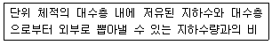
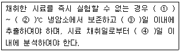
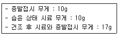
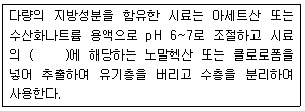
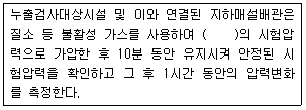
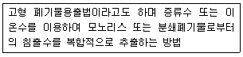
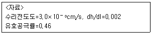
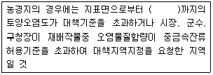
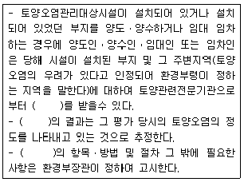
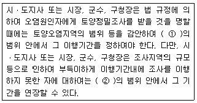

토양환경기사 (2011-03-20 기출문제)
1과목: 토양학개론
1. 토양생성작용 중 laterite화 작용에 관한 설명으로 옳지 않은 것은?
- 보통 고온다습한 열대기후 조건 하에서 일어난다.
- 염기류나 규산이 용탈되고 철 및 알루미늄의 산화물이 잔류해서 상대적으로 많아지는 과정을 말한다.
- Al2O3/Fe2O3의 비가 상대적으로 높은 토양이 생성 된다.
- 철과 알루미늄의 집적물은 plinthite 하고 하는 연성 광물이다.
(정답률: 알수없음)

2. 식물이 물을 흡수하지 못하여 시들게 되는 토양수분 상태를 나타내는 일반적인 위조점(토양수분퍼텐셜)은?
- -0.5 MPa
- -1.5 MPa
- -15 MPa
- -25 MPa
(정답률: 73%)
3. 토양의 입도분석 결과 입도분포 곡선으로부터 D10=0.06mm, D30=0.16mm, D60=0.53mm로 측정되었다. 이 때 곡률계수는?
- 0.71
- 0.81
- 0.91
- 0.98
(정답률: 77%)
4. 토양공기 조성에 관한 설명으로 옳은 것은?
- 토양의 깊이에 따른 산소함량 감소정도는 토양공극의 특성과 관계가 있다.
- 질소의 함량은 대기에 비하여 낮고 심토로 내려갈수록 비례하여 줄어든다.
- 대기에 비하여 상대습도는 낮고 탄산가스는 높은 편이다.
- 대기에 비하여 상대습도는 높고 탄산가스는 낯은 편이다.
(정답률: 70%)
5. 토양 내 질소 및 순환에 대한 설명으로 옳지 않은 것은?
- 작물의 생산에 있어서 결핍현상이 흔히 나타나는 원소이다.
- 질산성질소는 호기성조건하에서 질소가스로 환원된다.
- 대부분은 유기물로 존재하고 식물이 흡수 이용할 수 있는 형태인 무기태 질소는 2~3%에 불과하다.
- 질소의 무기화 과정은 미생물이 에너지를 얻기 위하여 유기물을 분해함으로써 부수적으로 발생한다.
(정답률: 50%)
6. 다음의 설명은 포화대의 수리지질학적인 특성인 지하수저유특성을 나타내는 어떤 인자에 관한 설명인가?

- 수분보유율
- 비저류율
- 비산출률
- 비보유율
(정답률: 86%)
7. 질산성 질소(NO3--N)의 농도가 15mg/L인 경우, NO3-의 농도는?
- 46.4mg/L
- 56.4mg/L
- 66.4mg/L
- 76.4mg/L
(정답률: 알수없음)
8. 오염된 대수층의 입자비중이 2.65이고 공극률이 0.3이라면 용적비중은?
- 0.79
- 0.92
- 1.86
- 3.78
(정답률: 72%)
9. 토양의 비열과 용적열용량에 관한 설명으로 옳지 않은 것은?
- 토양의 비열은 토양 1g의 온도를 1℃ 높이는데 필요한 열량이다.
- 토양의 비열이 크면 온도의 상승 및 하강이 느리다.
- 토양의 비열은 물의 비열의 2~4배 정도이다.
- 토양 내 모래 함량이 많을수록 용적열용량이 작아진다.
(정답률: 91%)
10. 토양 클로이드 입자에 흡착되는 양이온의 경우 그 흡착 세기가 순서대로 맞게 나열된 것은?
- H＞Ca=Mg＞K＞Na
- Ca＞H＞Mg＞K＞Na
- Mg=Ca＞H＞K＞Na
- K＞H＞Ca＞=Mg＞Na
(정답률: 80%)
11. 토양사상균에 관한 설명으로 옳지 않은 것은?
- 핵막과 세포벽을 가지고 있는 진핵 생물이다.
- 균사(hyphae)라고 불리는 가는 실모양을 하고 있다.
- 독립영양생물이다.
- 호기성 생물이지만 이산화탄소의 농도가 높은 환경에서도 잘 견딘다.
(정답률: 73%)
12. 유기물 60mmol이 미생물 황성에 의하여 12시간 후 40mmol이 되었다면 반응속도 상수는? (단, 1차 반응 기준)
- 0.013/hr
- 0.033/hr
- 0.⑤3/hr
- 0.073/hr
(정답률: 75%)
13. 어느 지역 토양의 공극률(porosity) 측정을 위해 토양 60cm3을 채취하여 고형입자 부피와 수분 부피를 측정하였더니 각각 36cm3와 12cm3였다. 이 지역 토양의 공극률(%)은?
- 10
- 20
- 30
- 40
(정답률: 59%)
14. 토양수분장력이 pF 4 라면 이를 물기둥의 압력으로 환산한 값으로 가장 적절한 것은?
- 약 1기압
- 약 4기압
- 약 8기압
- 약 10기압
(정답률: 알수없음)
15. 지하수의 동수구배가 0.002, 수리전도도가 3.0×10-3cm/sec일 때, 유료공극률 0.25인 토양층을 흐르는 지하수의 평균선형유속은? (단, Darcy의 법칙을 적용하라)
- 7.5×10-6cm/sec
- 5.2×10-6cm/sec
- 3.6×10-5cm/sec
- 2.4×10-5cm/sec
(정답률: 70%)
16. 바람에 실린 토양입자들이 크기에 따라 이동하는 경로에 관한 설명으로 옳지 않은 것은?
- 약동이란 대개 바람에 의하여 지름 0.1~0.5mm의 토양입자가 지표면에서 30cm 이하의 높이로 비교적 짧은 거리를 구르거나 튀는 모양으로 이동하는 것이다.
- 포행은 큰 토양입자가 토양 표면을 구르거나 미끄러지며 이동하는 것이다.
- 부유는 먼지 전체 이동량의 90% 이상으로 대부분을 차지한다.
- 약동에 의하여 움직이는 토양입자는 포행하는 입자를 때리거나 포행의 움직임을 더욱 빠르게 하는 역할을 한다.
(정답률: 알수없음)
17. 토양에서 염기 포화도(%)의 식으로 옳은 것은?
- (포화성염기용량(cmolc/kg)/교환성염기용량(cmolc/kg))×100
- (교환성염기용량(cmolc/kg)/포화성염기용량(cmolc/kg))×100
- (교환성염기용량(cmolc/kg)/음이온교환용량(cmolc/kg))×100
- (교환성염기용량(cmolc/kg)/양이온교환용량(cmolc/kg))×100
(정답률: 82%)
18. 지하수에 용존하는 용질의 이동기작 중 기계적 분산(오염된 지하수는 다공질 기질을 통해 흐르면서 분산이라는 기작을 통해 오염되지 않은 지하수와 섞여 희석됨)에 관한 설명으로 옳지 않은 것은?
- 유체의 유선방향을 따라 섞이는 것을 종분산이라 한다.
- 큰 공극을 지나는 유체가 작은 공극을 지나는 유체보다 빨리 흐르기 때문에 종분산이 일어난다.
- 유체가 공극을 통해 흐를 때 공극의 가장자리보다는 중심을 통해 더 빨리 흐르기 때문에 종분산이 일어난다.
- 기계적 분산계수=[평균선속도/동력학적 분산도로 나타난다.
(정답률: 50%)
19. 세계 토양목의 구분 중 Histosol에 관한 설명으로 가장 옳은 것은?
- 미발달 토양
- 유기질 높지 토양
- 건조지역의 토양
- 화산재 토양
(정답률: 84%)
20. 공극률(porosity)이 0.3인 토양의 공극비는?
- 0.34
- 0.43
- 0.52
- 0.61
(정답률: 84%)
2과목: 토양 및 지하수 오염조사기술
21. 다음은 석유계총탄화수소(TPH-기체크로마토그래피) 측정을 위한 시료 보존에 관한 내용이다. ( )안에 내용으로 옳지 않은 것은?

- ① 0
- ② 4
- ③ 14
- ④ 28
(정답률: 93%)
22. 비소-수소화물생성-원자흡수분광광도법에 관한 설명으로 옳지 않은 것은?
- 토양 중 비소의 정량한계는 0.01mg/kg 이다.
- 원자흡수분광광도계에 불꽃을 만들기 위한 가연성가스로 아세틸렌, 조연성가스로 공기를 사용한다.
- 원자흡수분광광도계에 사용하는 광원으로 좁은 선폭과 높은 휘도를 갖는 스펙트럼을 방사하는 비소속반음극램프를 사용한다.
- 비화수소를 원자화시켜 258nm에서 수소화물생성-원자흡수분광광도법에 따라 정량한다.
(정답률: 알수없음)
23. 냉수라 함은 별도의 온도에 대한 표시가 없는 경우 몇 ℃ 기준을 말하는가?
- 0~4℃
- 4℃ 이하
- 15℃ 이하
- 18℃ 이하
(정답률: 84%)
24. 토양의 pH(유리전극법)를 측정하는 시험방법에 대한 설명으로 옳지 않은 것은?
- pH 11 이상의 시료는 오차가 크게 발생할 수 있으므로 오차가 적은 특수전극을 사용한다.
- 현탁된 시료는 충분히 침전시켜 탁도의 영향을 최소화 한 후 유리전극을 넣어 측정한다.
- 토양을 오랫동안 방치하면 미생물의 작용으로 탄산가스가 발생하여 pH가 낮아질 수 있다.
- 토양 중 염류의 농도가 높아지면 pH값이 낮아지는 경우가 있다.
(정답률: 82%)
25. 석유계총탄화수소(TPH-기체크로마토그래피)의 측정에 관한 설명으로 옳지 않은 것은?
- 정량한계는 석유계 총탄화수소로 10 mg/kg이다.
- 토양 중에 비등점이 높은(150~500℃) 유류에 속하는 제트유, 등유, 경유, 벙커C유, 원유 등의 측정에 적용한다.
- 시료중의 제트유, 등유, 경유, 벙커C유, 윤활유, 원유 등을 클로로포름으로 추출, 정제한다.
- 기체크로마토그래피에 따라 짝수의 노말알칸(C8~C40) 표준물질의 피크 총면적과 시료 피크 총면적을 비교하여 정량한다.
(정답률: 64%)
26. 다음 중 pH 표준용액으로 사용하는 탄산염표준용액으로 적합한 것은? (단, 25℃ 포화용액)
- 탄산염표준액 0.01M
- 탄산염표준액 0.02M
- 탄산염표준액 0.025M
- 탄산염표준액 0.⑤M
(정답률: 알수없음)
27. 임의의 시료에 대해 수분(%)측정 실험 중 다음과 같은 결과를 얻었다. 이 시료의 수분은 몇 % 인가?

- 40%
- 30%
- 20%
- 15%
(정답률: 82%)
28. 이온전극법을 이용하여 불소를 분석할 때 정향한계로 옳은 것은?
- 10mg/kg
- 20mg/kg
- 30mg/kg
- 50mg/kg
(정답률: 37%)
29. 감압 또는 진공이라 함은 따로 규정이 없는 한 몇 mmHg 이하의 압력을 말하는가?
- 5 mmHg
- 10 mmHg
- 15 mmHg
- 20 mmHg
(정답률: 90%)
30. 토양환경평가를 위한 1단계 조사에서 시료채취 심도에 관한 내용으로 옳은 것은? (단, 토양환경평가지침 기준)
- 채취심도는 원칙적으로 3심도를 기본으로 한다.
- 채취심도는 원칙적으로 5심도를 기본으로 한다.
- 채취심도는 원칙적으로 7심도를 기본으로 한다.
- 채취심도는 원칙적으로 9심도를 기본으로 한다.
(정답률: 알수없음)
31. 용기 중 취급 또는 저장하는 동안에 이물질이 들어가거나 또는 내용물이 손실되지 아니하도록 보호하는 용기는?
- 밀폐용기
- 기밀용기
- 밀봉용기
- 밀입용기
(정답률: 55%)
32. 토양정밀조사 절차 단계와 가장 거리가 먼 것은?
- 기초조사
- 지역조사
- 개황조사
- 정밀조사
(정답률: 알수없음)
33. 유도결함플라스마-원자발광분광계에서 플라스마를 형성하는데 사용되는 가스는?
- 아르곤
- 질소
- 수소
- 아세틸렌
(정답률: 80%)
34. 정량한계 산정 식으로 옳은 것은? (단, S : 표준편차, X : 평균값)
- 정량한계=3.3×S
- 정량한계=10×S
- 정량한계=(3.3×X)/S
- 정량한계=(10×X)/S
(정답률: 90%)
35. 배관시설-가압 및 미감압시험법에 사용되는 검사기기 및 기구에 관한 내용으로 옳지 않은 것은?
- 가압장치 : 가압 시 시험압력까지 이르도록 조정되는 것이어야 한다.
- 사용가스 : 불활성 가스를 가압매체로 사용한다.
- 안전장치 : 시험압력의 1.1배 부근에서 작동할 수 있는 안전밸브를 갖추어야 한다.
- 압력계 : 최저 오차가 시험압력의 ±3% 이내이어야 한다.
(정답률: 알수없음)
36. 다음은 시안(자외선/가시선 분광법) 측정 시료에 다량의 기름성분이 함유되었을 때 전저리에 관한 설명이다. ( )안에 옳은 내용은?

- 약 1%
- 약 2%
- 약 3%
- 약 5%
(정답률: 67%)
37. 유기인화합물을 기체크로마토그래피법으로 정량할 때에 관한 내용으로 옳지 않은 것은?
- 토양 중 유기인화합물(이피엔, 파라티온, 메틸디메톤, 자이아지논 및 펜토에이트)의 측정방법이다.
- 유기인 화합물을 기체크로마토그래프로 분리한 다음 질소인검출기로 분석한다.
- 정향한계는 각 항목별 0.01mg/kg이다.
- 초자류는 사용 전에 아세톤, 분석 용액 순으로 각각 3회 세정한 후 건조시킨 것을 사용하여 오염을 최소화한다.
(정답률: 75%)
38. 다음은 저장물질이 없는 누출검사대상시설-가압시험법에 관한 내용이다. ( )안에 옳은 내용은?

- 0.1kgf/m2
- 0.2kgf/m2
- 0.3kgf/m2
- 0.5kgf/m2
(정답률: 64%)
39. 부속배관부를 가압시험법으로 누출여부를 검사할 때 판정기준으로 옳은 것은?
- 시험압력의 5% 이상의 압력변화량이 있으면 불합격으로 한다.
- 시험압력의 10% 이상의 압력변화량이 있으면 불합격으로 한다.
- 시험압력의 15% 이상의 압력변화량이 있으면 불합격으로 한다.
- 시험압력의 20% 이상의 압력변화량이 있으면 불합격으로 한다.
(정답률: 알수없음)
40. 금속류를 원자흡수분광광도법으로 측정시 정확도에 관한 내용으로 가장 적합한 것은?
- 정확도는 첨가한 표준물질의 농도에 대한 측정 평균값의 상대 백분율로서 나타내고 그 값이 50~70% 이내이어야 한다.
- 정확도는 첨가한 표준물질의 농도에 대한 측정 평균값의 상대 백분율로서 나타내고 그 값이 70~130% 이내이어야 한다.
- 정확도는 측정값의 상태표준편차를 산출하며 그 값이 10% 이내이어야 한다.
- 정확도는 측정값의 상태표준편차를 산출하며 그 값이 30% 이내이어야 한다.
(정답률: 알수없음)
3과목: 토양 및 지하수 오염정화 기술
41. 어느 지역의 토양 공극 내 TCE 포화도가 0.4 로 알려져 있다면 처리대상 TCE의 무게(kg)는? (조건 : 토양부피=1m3, 공극률=0.5, TCE밀도=1.4kg/L
- 60
- 120
- 140
- 280
(정답률: 64%)
42. 250kg의 가솔린이 포화대에 유출되었다. 자연정화법으로 오염지역을 처리하고자 한다. 가솔린이 생물학적으로만 분해되어 없어진다면 오염지역의 가솔린을 분해하기 위하여 필요한 산소량은? (단, 산소/가솔린 소비율=2mg 02mg 가솔린 이며 기타 조건은 고려하지 않음)
- 125 kg
- 250 kg
- 500 kg
- 1000 kg
(정답률: 알수없음)
43. 평균농도 60mg/kg의 자일렌(Xylene)으로 오염된 토양의 부피가 12,000m3라면 오염부지 내 존재하는 자일렌의 총 함량은? (단, 토양 bulk density=1.8g/cm3)
- 약 1100 kg
- 약 1300 kg
- 약 1500 kg
- 약 1700 kg
(정답률: 64%)
44. ( )안에 용출능 평가시험 명으로 옳은 것은?

- MWRP 시험법
- MCC-IP 시험법
- CLT 시험법
- EP 시험법
(정답률: 82%)
45. 열탈착 기술에 관한 설명으로 옳지 않은 것은?
- 다양한 수분함량과 오염농도를 갖는 여러 토양에 적용 될 수 있다.
- 휘발성 유기화합물(SVOCs)의 제거도 가능하다.
- 유기염소 및 유기인 살충제 처리시 푸란과 다이옥신이 발생되는 담점이 있다.
- 열탈착 공정에서 발생하는 가스량은 같은 용량의 소각 공정에 비해 상대적으로 적다.
(정답률: 84%)
46. Steam injection 공법에 관한 설명으로 옳지 않은 것은?
- 오염물질의 범위와 양에 따라 다르지만 일반적으로 처리시간은 몇 시간 정도로 단시간이다.
- 지중의 온도가 증가하므로 지반의 성질 개선에 좋은 영향을 미친다.
- 오염지반 상승시켜 오염물질의 휘발성을 증대시킨다.
- 알칸(Alkane)과 알칸기저 알콜 추출에 효과적이다.
(정답률: 70%)
47. 다음 중 토양증기추출법과 바이오벤팅에 대한 설명으로 옳지 않은 것은?
- 바이오벤팅은 불포화 토양층에 산소를 공급함으로써 미생물의 분해를 통해 유기물질의 분해를 도모하는 방법이다.
- 바이오벤팅은 휘발성이 강한 유기물질 이외에도 중간정도의 휘발성을 가지는 분자량이 다소 큰 유기물질도 처리할 수 있다.
- 토양증기추출법과 바이오벤팅의 운전상의 가장 큰 차이는 토양내 설치 관정의 깊이이다.
- 토양증기추출법은 헨리상수가 0.01 이상일 때 적용한다.
(정답률: 34%)
48. 오염부지 내 TPH 초기오염농도 5000mg/kg이 90일 후에 2000mg/kg으로 저감 되었다면, 1차 반응속도 상수는?
- 0.⑤/day
- 0.03/day
- 0.02/day
- 0.01/day
(정답률: 40%)
49. 자일렌 100mg/L의 농도로 오염된 지하수 2000m3을 처리하기 위해 필요한 활성탄의 양은? (단, 자일렌에 대한 활성탄의 흡착능 0.0789g-Xy lenes/g-carbon)
- 76kg
- 478kg
- 1.62t
- 2.54t
(정답률: 64%)
50. Bioventing법을 적용하기 위하여 30%의 공극률을 가진 토양 1,000m3에 1,500m3/day의 공기를 주입하였다. 주입공기의 산소농도는 21%이며 배기가스의 산소농도는 10% 였다면 평균산소 소모율은?
- 25%/day
- 35%/day
- 45%/day
- 55%/day
(정답률: 50%)
51. Soil Flushing 에 관한 설명으로 옳지 않은 것은?
- 휘발성 유기화합물질, 준휘발성 유기화합물질의 처리시에는 경제성이 떨어진다.
- 세정용액에 의해 2차오염이 유발될 수 있다.
- 투수성이 낮은 토양에서는 처리하기가 어렵다.
- 중금속 오염토양처리에는 부적합하다.
(정답률: 75%)
52. 오염지하수를 반응벽체로 처리하고자 한다. 반응벽체 내 지하수 통과 선속도가 2m/day이며, 반응벽체 내 체류시간이 12시간이 되어야 할 경우 반응벽체의 두께는 얼마가 필요한가?
- 0.6m
- 1.0m
- 2.4m
- 6.0m
(정답률: 70%)
53. 분자식이 C6H12O6인 포도당 200g이 완전 산호할 때 소모되는 이론 산소량은?
- 약 137g
- 약 189g
- 약 213g
- 약 287g
(정답률: 알수없음)
54. 수직방어벽인 슬러리원에 관한 설명으로 옳지 않은 것은?
- 지하수의 흐름을 다른 곳으로 우회시켜 오염되지 않은 지하수를 오염된 지역으로부터 격리시킨다.
- 지하수의 흐름을 다른 곳으로 우회시켜 오염되지 않은 지하수를 오염물질의 분해 또는 지체효과를 감소시킨다.
- 낮은 수리전도도를 가진 흙이나 가용한 다른 첨가제 등 오염물질의 거동을 제어하는 물질을 지중 트렌치에 채운다.
- 투수계수가 다소 높은 지역에 유용하다.
(정답률: 100%)
55. 오염토양의 불용화를 위해 화학적 처리를 하고자 할 때 오염물질과 그 처리에 사용되는 물질에 대한 연결로 가장 적합한 것은?
- 시안화합물 - 치아염소나트륨(NaOCl)
- 6가 크롬 - 염화철(FeCl2)
- 비소화합물 - 황화철(FeSO4)
- 수은화합물 - 염화철(FeCl2)
(정답률: 64%)
56. 매립지에서 염소의 농도가 1000mg/L인 침출수가 누출되어 다음과 같은 특성을 지닌 대수층으로 유입되고 있다. 다음 ＜자료＞를 이용하여 산출된 평균성선형유소은?

- 1.3×120-7m/s
- 1.6×120-7m/s
- 2.6×120-8m/s
- 2.8×120-8m/s
(정답률: 50%)
57. 미생물은 크게 탄소원과 에너지원에 따라 분류되는데 탄소원이 CO2이며 에너지원으로 무기물의 산화환원반응을 이용하는 미생물은?
- 화학합성 종속영양 미생물
- 화학합성 자가영양 미생물
- 광합성 종속영양 미생물
- 광합성 자가영양 미생물
(정답률: 91%)
58. 다음 중 토양세척공정에 관한 설명으로 옳지 않은 것은?
- 외부환경의 영향을 자체적으로 조정하여야 하는 개방형 공정이다.
- 오염토양 부피의 단시간내의 효율적인 급감으로 2차 처리비용을 절감할 수 있다.
- 토양세척의 효과를 결정짓는 것은 물질의 종류에 의한 타이보다 토양의 성상에 따른 영향이 크다.
- 오염물질의 물리화학적 특징 중 세척효율을 높일 수 있는 요인으로는 수용성과 휘발성이다.
(정답률: 100%)
59. 동전기복원기술의 장, 단점으로 옳지 않은 것은?
- 오염지역의 복원이 영구적이다.
- 염이나 2차 광물의 침전에 의하여 효율이 증대된다.
- 금속으로 오염된 지역에 주로 효과적이다.
- 지반 매트릭스 자체에 미치는 영향이 정확하게 규명되지 않았다.
(정답률: 90%)
60. 투수성 반응벽에서 명가철(Fe˚)을 사용하여 TCE, PCE 등과 같은 염화 유기 화합물을 제거하는 경우에 작용하는 반응 기작으로 가장 적합한 것은?
- Fe˚+RCl+Cl-+2H-→Fe2+RH+2H++2Cl-
- Fe˚+RCl+2OH-→Fe2++RH2+2Cl-+O2
- Fe˚+RCl+OH-→Fe2++2RH+Cl-+O2-
- Fe˚+RCl+H+→Fe2++RH+Cl-
(정답률: 64%)
4과목: 토양 및 지하수 환경관계법규
61. 환경부장관 또는 시장ㆍ군수ㆍ구청장이 청문을 실시하여야 하는 경우에 해당하는 것은?
- 토양정화업의 등록 쉬고
- 토양관련전문기관에 대한 업무정지
- 오염된 토양의 정화 조치
- 토양오염유발시설의 이전
(정답률: 54%)
62. 농업용수 용도로 지하수 개발 시 수질검사 대상이 되는 지하수 기준으로 옳은 것은?.
- 1일 양수능력이 30톤 이상인 경우
- 1일 양수능력이 50톤 이상인 경우
- 1일 양수능력이 100톤 이상인 경우
- 1일 양수능력이 300톤 이상인 경우
(정답률: 73%)
63. 지하수의 수질기준 항목 중 특정유해물질에 포함되지 않은 항목은? (단, 지하수를 생활용수로 이용하는 경우)
- TPH
- 비소
- 톨루엔
- TCE
(정답률: 29%)
64. 다음은 토양보전대책지역의 지정기준에 관한 내용이다. ( )안에 내용으로 옳은 것은?

- 15cm
- 30cm
- 50cm
- 80cm
(정답률: 71%)
65. 다음 중 토양보전대책지역의 토양보전대책을 위한 계획에 포함되는 오염토양개선사업의 종류와 가장 거리가 먼 것은?
- 객토 및 토양개량제의 사용 등 농토배양사업
- 오염토양 관리 및 복원 사업
- 오염토양의 위생적 매립ㆍ정화사업
- 오염물질의 흡수력이 강한 식물석재사업
(정답률: 62%)
66. 토양관련전문기관인 토양오염조사기관 지정기준 중 장비기준으로 가장 거리가 먼 것은?
- 가스크로마토그래트 질량분석기(GC/MSD) 1대
- 자가동력시추기(타격식이나 나선형식으로 시추 깊이가 최소 6m 이상일 것) 1대
- 산소농도측정기 1대
- 퍼지ㆍ트랩장치 1대
(정답률: 40%)
67. 전국적인 토양오염실태를 파악하기 위해 환경부장관이 고시하는 측정망성치계획에 포함되어야 하는 사항과 가장 거리가 먼 것은?
- 측정망 설치시기
- 측정항목 및 방법
- 측정망 배치도
- 측정지점의 위치 및 면적
(정답률: 알수없음)
68. 시장, 군수, 구청장은 오염토양개선사업의 전부 또는 일부의 실시를 그 오염원인자에게 명할 수 있다. 이 경우 시장, 군수, 구청장은 토양보전을 위하여 필요하다고 인정하는 경우에 환경부령으로 정하는 토양관련전문기관으로 하여금 오염토양개선사업을 지도, 감독하게 할 수 있다. 위 내용에서 언급한 ‘환경부령으로 정하는 토양관련전문기관’ 으로 옳은 것은?
- 농촌진흥청
- 한국환경공단
- 국립환경과학원
- 시ㆍ도 보건환경연구원
(정답률: 알수없음)
69. 환경부장관이 수립하도록 되어있는 토양보전기본계획에 반드시 포함되어야 할 사항과 가장 거리가 먼 것은?
- 토양오염의 현황, 진행상황 및 장래예측
- 토양오염방지를 위한 재원 조달계획
- 토양오염의 방지에 관한 사항
- 토양보전에 과한 시책방향
(정답률: 73%)
70. 다음 중 토양관련전문기관에 대한 설명으로 옳지 않은 것은?
- 토양관련전문기관은 크게 토양오염조사기관과 누출검사 기관으로 나눌 수 있다.
- 토양관련전문기관의 준수사항 및 검사수수료, 그 밖에 필요한 사항은 환경부령으로 정한다.
- 농업과학기술원과 국립산림과학원은 대통령령이 정하는 토양오염조사기관으로 지정된 것으로 본다.
- 토양오염조사기관은 토양환경평가, 토양정밀조사를 수행한다.
(정답률: 알수없음)
71. 다음 중 지하수의 수질기준 설정 항목(일반오염물질)에 해당되는 것은? (단, 지하수를 생활용수로 사용하는 경우)
- 부유물질
- 화학적 산소요구량
- 염소이온
- 생물화학적 산소요구량
(정답률: 70%)
72. 토양보전대책지역 지정표지판에 표시되는 내용과 가장 거리가 먼 것은?
- 지정사유
- 지정목적
- 지정일자
- 토양보전대책지역안에서 제한되는 행위
(정답률: 70%)
73. 토양오염물질과 토양오염대책기준이 잘못 짝지어진 것은? (단, 1지역 기준)
- TCE-24 mg/kg
- 벤조(a)피렌-2 mg/kg
- TPH-8 mg/kg
- PCE-12 mg/kg
(정답률: 50%)
74. 다음 ( )안에 공통으로 들어갈 용어로 옳은 것은?

- 토양오염도평가
- 토양환경평가
- 토양정화평가
- 토양오염조사 및 평가
(정답률: 40%)
75. 다음 중 토양오염우려기준(1지역)에 대한 항목 및 기준치가 잘못 연결된 것은?
- 수은 : 4mg/kg
- TCE : 8mg/kg
- 불소 : 400mg/kg
- 니켈 : 50mg/kg
(정답률: 알수없음)
76. 토양환경보전법상 용어의 정의로 옳지 않은 것은?
- “토양오염” 이라 함은 사업 활동 기타 사람의 활동에 따라 토양이 오염되는 것으로서 사람의 건강, 재산이나 환경에 피해를 주는 상태를 말한다.
- “토양오염물질” 이라 함은 토양오염의 원인이 되는 물질로서 환경부령이 정하는 것을 말한다.
- “토양오염관리대상시설” 이라 함은 토양오염물질을 생산ㆍ운반ㆍ저장ㆍ취급ㆍ가공 또는 처리함으로써 토양을 오염시킬 우려가 있는 시설ㆍ장치ㆍ건물ㆍ구축물 및 장소 등을 말한다.
- “특정토양오염유발대상시설” 이라 함은 특정토양오염 물질의 누출로 인한 토양오염의 우려가 현저한 시설로서 환경부령이 정하는 것을 말한다.
(정답률: 67%)
77. 다음 중 토양오염검사수수료가 가장 비싼 항목은?
- 6가 크롬
- 유기인
- 페놀류
- 수은
(정답률: 70%)
78. 토양정밀 조사명령에 관한 내용이다. ( )안에 내용으로 옳은 것은?

- ①3월 ①1월
- ①3월 ①3월
- ①6월 ①3월
- ①6월 ①6월
(정답률: 73%)
79. 토양환경보전법령에서 정하고 있는 오염토양의 정화방법과 가장 거리가 먼 것은?
- 오염물질의 분리추출
- 오염물질의 매립
- 오염물질의 소각
- 오염물질의 차단
(정답률: 알수없음)
80. 속임수 그 밖의 부정한 방법으로 토양관련전문기관의 지정을 받거나 토양정화업의 등록을 한 자에 대한 벌칙기준은?
- 1년 이하의 징역 또는 500만원 이하의 벌금
- 2년 이하의 징역 또는 1천만원 이하의 벌금
- 3년 이하의 징역 또는 2천만원 이하의 벌금
- 1천만원 이하의 과태료
(정답률: 80%)